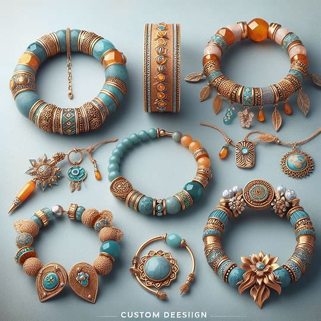
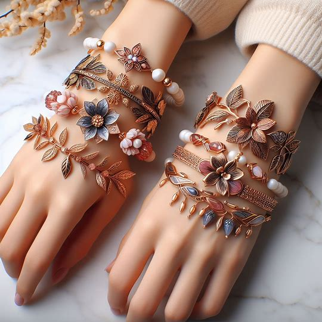
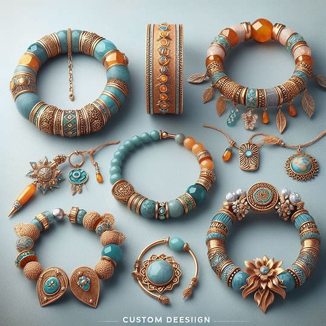
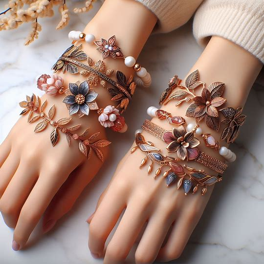

Zarafetin ve stilin incelikle işlendiği bir koleksiyonla tanışın: Nisay Jewelry'nin muhteşem bileklikleri!
Her bir bileklik, özenle seçilmiş malzemeler ve özel tasarım detaylarla hayat bulur. Eşsiz tasarımlarımız arasında, minimal ve zarif bilekliklerden, cesur ve dikkat çekici modellere kadar her tarza ve her zevke uygun seçenekler bulunmaktadır.
Bileklik koleksiyonumuz, özel günlerde veya günlük kullanımda tarzınızı tamamlayacak ve kişiliğinizi yansıtacak bir parça bulmanıza yardımcı olur. Zarif zincir detayları, parıltılı taşlar ve özenle işlenmiş metal işçilikleriyle, her bir bileklik benzersiz bir şıklık ve zarafet sunar.
Nisay Jewelry'nin bileklikleri, kaliteli malzemeler ve özenli işçilikle hazırlanır, uzun süre dayanıklılık ve güzelliğini korur. Her bir bileklik, sizin için özel bir anlam taşıyacak ve stilinizi tamamlayacak bir parça olacaktır.
Siz de Nisay Jewelry'nin büyüleyici bileklik koleksiyonunu keşfedin ve şıklığınıza zarafet katın.
 


